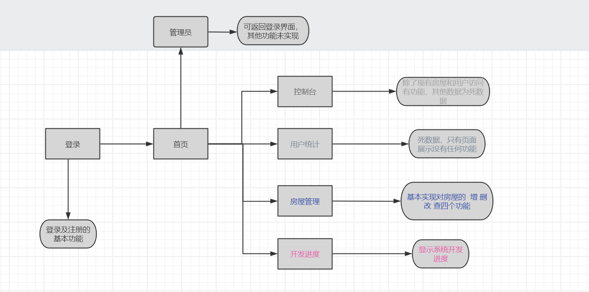
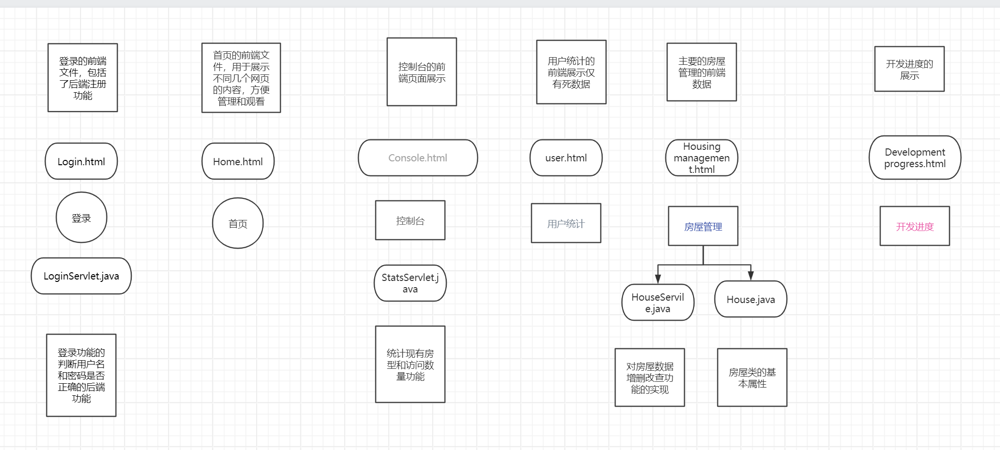

系统功能实现与文件梳理
功能实现流程图

上图展示了系统的功能实现流程，包括登录、主页功能和管理员功能等。
前后端文件梳理

此部分用于展示前后端文件的梳理情况，帮助理解项目结构。
下一步计划
登录与注册功能：
由于未连接数据库的原因，登录和注册依旧是死数据， 且目前前后端未完全分离。在登录功能的前端文件中，有一些未分离出去的后端文件。
房屋管理数据：
房屋管理的数据未能连接数据库。准备加入数据库， 测试系统在连接数据库后对主要功能的完善。
移动端开发：
计划加入移动端开发，目前尚未开始。